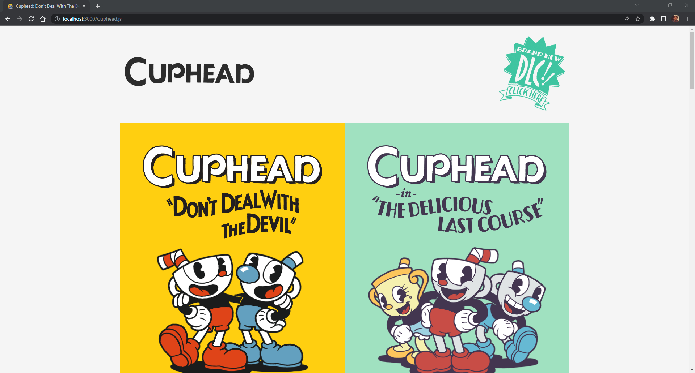
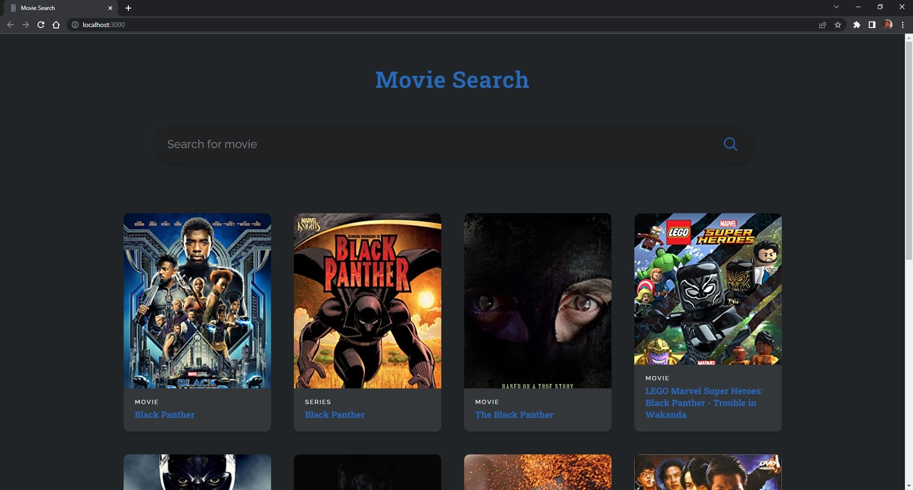
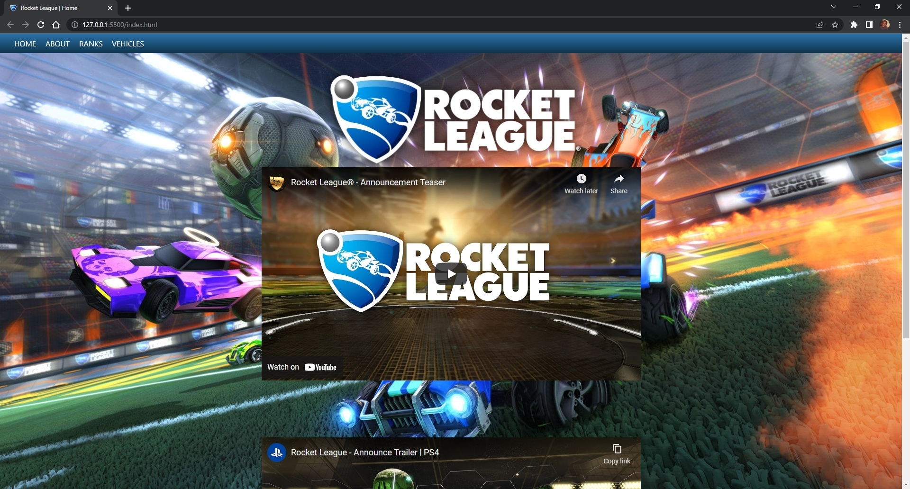

Projects
Cuphead Clone
 Live Demo Source CodeMy idea for the Cuphead Clone website was to get familiar with React and what it has to offer in the front end process. In the process I overcame a few challenges. The most challenging of them was learning to make the website mobile friendly and should be one of the main focuses because you want to take into consideration the amount of people that use devices other than a computer to view websites. I made the website with React so that I can futher implement some of the features that it offers.
Movie Search
 Live Demo Source CodeIn my Movie Search project, I sought to learn both React and how to use an OMDb (Open Movie Database) API to gather information for each movie. This project can be used to show movie titles with the year it was released and if it has a movie poster it will show up in each card, but if it doesn't it will have a placeholder instead. The most challenging part was trying to get familiar with a whole new environment, React. I was challenged to use three features that React provides (useState, useEffect, and useRef). I learned the syntax for JSX and used it to create each movie card.
Rocket League Wiki
 Live Demo Source CodeThis project was the start of my journey to learn HTML, CSS, and JavaScript. My idea of for this project was to create a wiki for a game, Rocket League, that I enjoy playing on leisure. The project is ment to explain the core aspect of what makes Rocket League unique from other big titles. I learned the complexity and what it takes to design just the front end of a static website. I would have to say that the most challenging part of the project was the Ranks page. Most of my challenges were trying to implement a text box that would have an output for the user that would tell the user what rank they would be in or what there MMR (Match Making Rating) would be in the competitive 3v3 playlist.